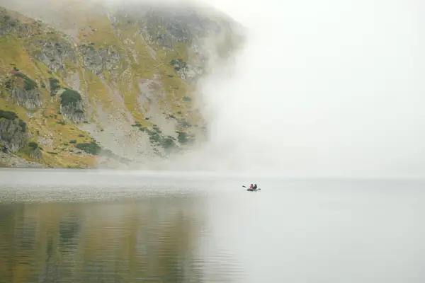
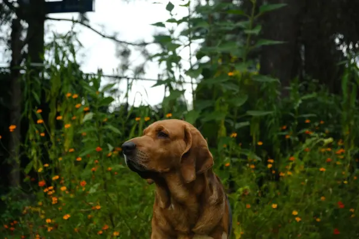
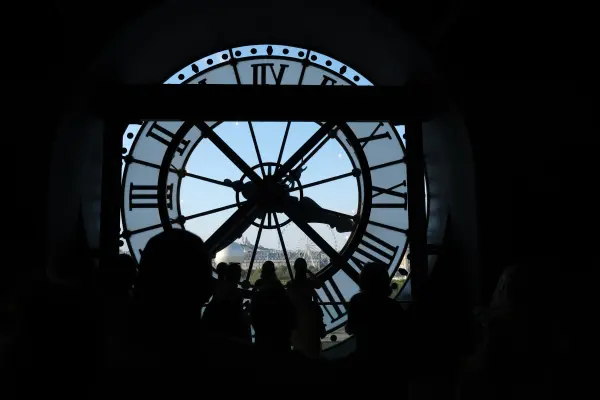

O mnie
Nazywam się Antoni Tomaszewski. Na co dzień pracuję jako informatyk we Wrocławiu, a fotografia jest moją pasją. Szukam piękna w ludziach, naturze, architekturze i sztuce.
Dużo czasu spędzam w Tatrach. Regularnie trenuję w mieście i w górach, bo przygotowuję się do zostania ratownikiem-ochotnikiem TOPR. Dlatego w górach bywam często i o różnych porach roku.
Przez lata grałem na gitarze klasycznej po kilka godzin dziennie i do dziś co jakiś czas do niej wracam. Poza tym żegluję i czytam Szekspira.
Fotografuję aparatem Fujifilm.
Portfolio
Fotografuję góry, morze, zwierzęta, miasta i ludzi. Kliknij kategorię, aby zobaczyć galerię.
Więcej zdjęć gór znajdziesz na stronie Zdjęcia Tatr.

Tatry


Morze



Zwierzęta



Miasta


Ludzie


Oferta
Zdjęcia Tatr dla pensjonatów i obiektów
Zdjęcia gór, krajobrazów i okolicy na stronę internetową, do social mediów i materiałów reklamowych pensjonatów, schronisk i obiektów podtatrzańskich. Gotowe zdjęcia z licencją albo sesja na zamówienie, np. widok z Twojego obiektu o świcie, zimą lub jesienią. Szczegóły oferty dla pensjonatów
Sesje portretowe
Sesje dla modelek, modeli i osób prywatnych w mieście, w plenerze lub w górach. Więcej o sesjach
Fotografia ślubna
Reportaż z dnia ślubu i plener, także w Tatrach.
Instytucje kultury i wydarzenia
Koncerty, spektakle, uroczystości i wydarzenia miejskie: zdjęcia dla filharmonii, oper, teatrów, parafii i instytucji miasta.
Publikacje
Redakcje i wydawnictwa zainteresowane zdjęciami gór i natury zapraszam do kontaktu.
Napisz, czego potrzebujesz, a odpowiem z propozycją i wyceną.
Kontakt
Napisz, czego potrzebujesz, albo zostaw e-mail lub telefon w formularzu poniżej. Odpowiem z propozycją i wyceną.